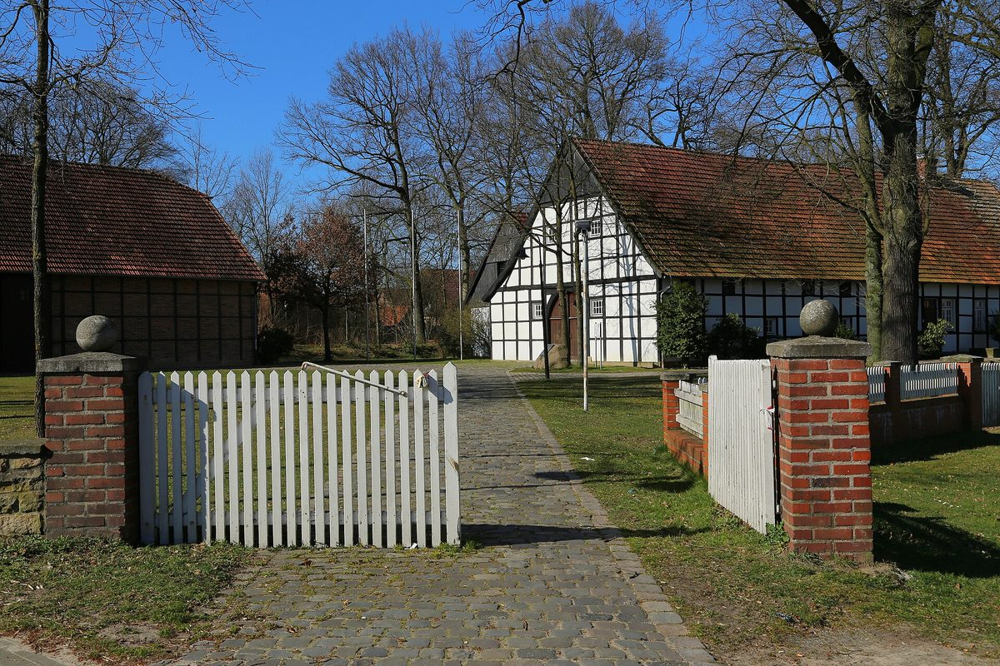

독일 자르베크 지역 열망 주민총회에 약 230명 모여…대상 지역 455가구 초청해 요금·기술과 열 협동조합 설립 설명

지자체 지도부, 10월 28일 저녁 마을 회관 뷔르거샤이네서 열망 잠재 지역 주민에게 사업 직접 안내…시장은 마을 기반시설의 큰 걸음이라고 강조
독일 노르트라인베스트팔렌주의 기후 지자체 자르베크(Saerbeck)가 추진하는 지역 열망 사업의 주민총회에 약 230명이 모였다. 지자체는 열망이 들어설 수 있는 잠재 대상 지역의 455가구를 초청해 10월 28일 저녁 마을 회관 뷔르거샤이네(Bürgerscheune)에서 총회를 열었고, 지자체 지도부가 요금과 기술 세부 사항, 그리고 열 협동조합(Wärmegenossenschaft) 설립을 안내했다. 토비아스 레베르크(Tobias Lehberg) 시장은 인사말에서 "열망은 의심할 여지 없이 마을 기반시설의 큰 걸음"이라고 말했다. 이날 제시된 구체적인 요금 수준과 연결 계약 조건, 열 협동조합 참여 방식은 아직 공개 보도로 확인되지 않았다.
시민에너지 관점
초청장을 받은 455가구에 견줘 약 230명이 평일 저녁 총회에 직접 나왔다는 것은, 난방처럼 집집의 살림과 맞닿은 사업일수록 주민이 설명을 직접 듣고 판단하려 한다는 점을 보여 준다. 요금이 나오면 주민이 등을 돌릴 것이라는 우려도 있을 수 있지만, 지자체가 요금과 기술을 한자리에서 설명하는 자리를 만들자 많은 주민이 먼저 응답했다. 특히 열망을 지자체나 업체만의 사업으로 두지 않고 열 협동조합을 세우겠다는 안내는, 주민이 요금을 내는 손님에 머물지 않고 열 공급 설비의 주인이 되어 요금과 투자를 함께 정하는 길을 연다. 국내 지역 난방 전환과 햇빛소득마을 사업도 대상 가구를 모두 초청하는 설명회를 먼저 열고, 참석자 수와 가입 의사, 주민 조합 설립 계획을 공개하는 절차를 기본으로 삼아야 한다.
출처: Westfälische Nachrichten 2026-10-29 Katja Niemeyer 원문 보기
ドイツ・ザーベックの地域熱供給網の住民総会に約230人…対象地域の455世帯を招き料金・技術と熱協同組合の設立を説明
自治体の幹部が10月28日夜、住民会館ビュルガーシャイネで熱供給網の候補地域の住民に事業を直接説明…町長は村のインフラにとって大きな一歩だと強調
ドイツ・ノルトライン＝ヴェストファーレン州の気候自治体ザーベック（Saerbeck）が進める地域熱供給網事業の住民総会に、約230人が集まった。自治体は熱供給網を敷設できる候補地域の455世帯を招き、10月28日夜に住民会館ビュルガーシャイネ（Bürgerscheune）で総会を開き、自治体の幹部が料金と技術の詳細、そして熱協同組合（Wärmegenossenschaft）の設立について説明した。トビアス・レーベルク（Tobias Lehberg）町長はあいさつで「熱供給網は間違いなく村のインフラにとって大きな一歩だ」と述べた。この日示された具体的な料金水準や接続契約の条件、熱協同組合への参加方法は、まだ公開の報道では確認されていない。
市民エネルギーの視点
招待状を受け取った455世帯に対し、約230人が平日の夜の総会に直接足を運んだことは、暖房のように各家庭の暮らしに直結する事業ほど、住民が自ら説明を聞いて判断しようとすることを示している。料金が示されれば住民が背を向けるのではとの懸念もありうるが、自治体が料金と技術を一堂で説明する場を設けると、多くの住民がまず応えた。とりわけ熱供給網を自治体や事業者だけの事業にとどめず、熱協同組合を設立するという説明は、住民が料金を払う客にとどまらず、熱供給設備の持ち主として料金や投資を共に決める道を開く。韓国の地域暖房の転換や「太陽光所得村」事業も、対象世帯をすべて招く説明会をまず開き、参加者数や加入意向、住民組合の設立計画を公開する手続きを基本とすべきだ。
出典: ヴェストフェーリッシェ・ナハリヒテン（Westfälische Nachrichten） 2026-10-29 カトヤ・ニーマイヤー（Katja Niemeyer） 原文を読む
德国萨尔贝克区域供热管网居民大会约230人到场…邀请目标区域455户，介绍价格、技术和成立供热合作社
市镇领导层10月28日晚在村民会馆Bürgerscheune向供热管网潜在区域居民直接介绍项目…镇长强调这是村庄基础设施的一大步
德国北莱茵-威斯特法伦州的"气候市镇"萨尔贝克（Saerbeck）推进的区域供热管网项目召开居民大会，约230人到场。市镇邀请了可能铺设供热管网的潜在区域内的455户家庭，于10月28日晚在村民会馆Bürgerscheune举行大会，市镇领导层介绍了价格、技术细节以及成立供热合作社（Wärmegenossenschaft）的事宜。镇长Tobias Lehberg在致辞中说："供热管网无疑是村庄基础设施的一大步。"当天公布的具体价格水平、接入合同条件以及参与供热合作社的方式，目前尚未在公开报道中得到确认。
市民能源视角
收到邀请的455户中，约有230人在工作日晚上亲自来到大会现场，这说明像供暖这样与各家生活直接相关的项目，居民越是愿意亲自听取说明、自己作出判断。有人可能担心价格一公布居民就会转身离开，但市镇一旦创造了集中说明价格和技术的场合，许多居民便率先作出了回应。尤其是不把供热管网只当作市镇或企业的项目、而是要成立供热合作社的说明，为居民打开了一条路：不只是付费的顾客，而是成为供热设施的主人，共同决定价格和投资。韩国的区域供暖转型和"阳光收入村"项目，也应把先举办邀请全部目标住户的说明会、公开到场人数、加入意向和居民合作社成立计划作为基本程序。
来源: 《威斯特法伦新闻》（Westfälische Nachrichten） 2026-10-29 Katja Niemeyer 查看原文
About 230 people turn out for Saerbeck's residents' meeting on a local heat network, as the German village invites 455 households to hear about prices, technology and a heat co-operative
Municipal leaders briefed residents of the potential network area in person at the Bürgerscheune hall on the evening of 28 October; the mayor called the network a big step for the village's infrastructure
About 230 people attended a residents' meeting on the local heat network being planned by Saerbeck, a "climate municipality" in North Rhine-Westphalia, Germany. The municipality invited the 455 households in the potential network area to the meeting at the Bürgerscheune community hall on the evening of 28 October, where municipal leaders explained prices, technical details and the founding of a heat co-operative (Wärmegenossenschaft). Opening the meeting, Mayor Tobias Lehberg said a heat network was "without doubt a big step for the village's infrastructure." The specific price levels, connection contract terms and the way residents can join the heat co-operative presented that evening have not yet been confirmed in publicly available reporting.
Citizen Energy View
That about 230 people came to a weekday evening meeting out of 455 invited households shows that the closer a project comes to household budgets, as heating does, the more residents want to hear the details and judge for themselves. Some may fear residents will turn away once prices are on the table, but when the municipality created a forum to explain prices and technology in one place, many residents responded first. Above all, the plan not to leave the network to the municipality or a company alone but to found a heat co-operative opens a path for residents to be more than paying customers, becoming owners of the heat supply who decide prices and investment together. In Korea, too, local heating conversions and Sunlight Income Village projects should, as standard practice, begin with briefings to which every target household is invited and publish attendance, sign-up intentions and plans for a residents' co-operative.
Source: Westfälische Nachrichten 2026-10-29 Katja Niemeyer Read the original